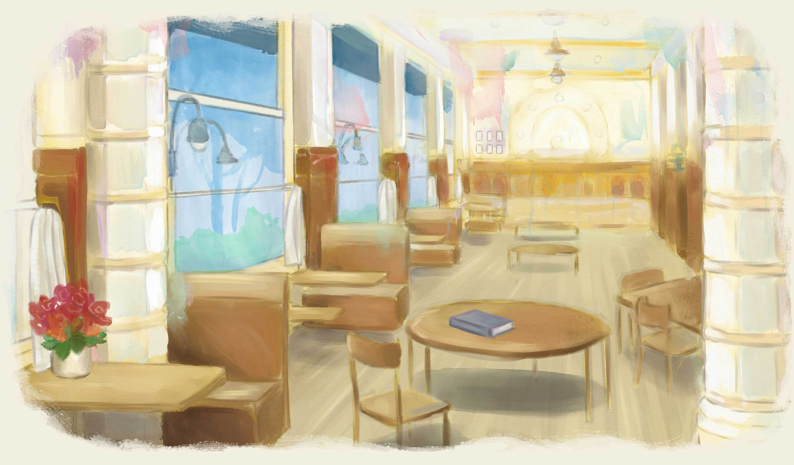
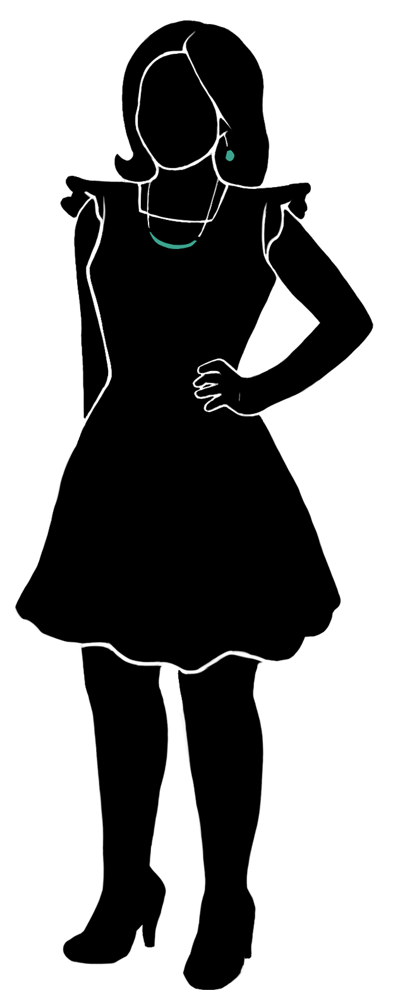

<router-outlet></router-outlet>
<app-header></app-header>
<div class="cafe-container" #cafecontainer>
  <div class="image-wrapper">
    
    <div class="typewriter eye" routerLink="typewriter">
      <button class="desktop-typewriter" mat-button color="primary" aria-label="Writing contest" routerLink="typewriter">
        <p>Writing <br> Contest</p>
      </button>
    </div>
    <div class="mobile-div" routerLink="typewriter">
      <button class="mobile-typewriter" mat-button color="primary" aria-label="Writing contest" routerLink="typewriter">
        <p>Writing <br> Contest</p>
      </button>
    </div>
    <div class="window eye" routerLink="window">
    </div>
    <div class="wall-minor-authors eye" routerLink="wall_of_exceptionally_minor_authors">
      <button mat-button color="primary" aria-label="Wall of Minor Authors" routerLink="wall_of_exceptionally_minor_authors">
        <p> The Wall <br>
          <em>of minor authors</em>
        </p>
      </button>
    </div>
    <div class="wall-mobile" routerLink="wall_of_exceptionally_minor_authors">
      <div>
        <button mat-button color="primary" aria-label="Wall of Minor Authors" routerLink="wall_of_exceptionally_minor_authors">
          <p> The Wall <br>
            <em>of minor authors</em>
          </p>
        </button>
      </div>
    </div>
    <div class="bangs eye accent">
      
    </div>
    <div class="character2 eye accent">
      
    </div>
    <div class="character3 eye accent">
      
    </div>
    <div class="character4 eye accent">
      
    </div>
    <div class="character5 eye accent">
      
    </div>
  </div>
</div>
<app-footer></app-footer>